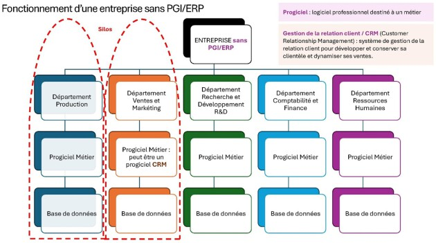

Le système d’information (SI)
Définition
Définition : Système d’information
Le système d’information est l’ensemble des ressources (humaines, matérielles, logicielles) permettant de :
collecter, stocker, traiter et diffuser l’information
Fondamental :
Il permet de coordonner l’activité et d’aider à la prise de décision
Donnée, information, connaissance
Transformation des données en information et en connaissances
Données à caractère personnel et RGPD

Big data et Open data

Les fonctions du SI
Collecter → saisir les données | Stocker → conserver l’information | Traiter → analyser les données | Diffuser → transmettre aux acteurs |
|---|---|---|---|
Le SI permet de recueillir des données issues de différentes sources :
| Le SI permet de enregistrer et organiser les données :
| Le SI permet de transformer les données en informations utiles :
| Le SI permet de communiquer l’information aux bonnes personnes :
via :
|
Objectif : alimenter le système avec des données fiables | Objectif :
| Objectif : aider à la compréhension et à la décision | Objectif : faciliter la coordination et la prise de décision |
Les outils du système d'information
PGI / ERP et CRM
Fonctionnement sans PGI

Complément : Pourquoi l’absence de Progiciel de Gestion Intégré (PGI) n’est pas idéale ?
Dans un fonctionnement sans PGI/ERP, chaque département dispose de son propre progiciel métier, avec sa propre manière de collecter, traiter et diffuser des données pour les transformer en informations.
Le fonctionnement en silo sans PGI/ERP entraîne un manque de communication et de coordination, des données fragmentées, une inefficacité opérationnelle, des difficultés à suivre les performances et un risque de redondance et d'incohérence. Cela peut générer des inefficacités, des erreurs et des coûts supplémentaires pour les entreprises.
Fonctionnement avec PGI

Complément : Avantages du PGI
L’utilisation d’un PGI nécessite de passer par une standardisation dans la manière de collecter des données afin de les rendre interopérables :
Avantage | Explication |
|---|---|
Intégrité et unicité du système d’information | Un PGI centralise toutes les données de l'entreprise dans une base de données unique, éliminant les doublons et réduisant les risques d'erreurs. |
Amélioration de la productivité | En automatisant les processus et en standardisant les opérations, un PGI permet de gagner du temps et d'augmenter l'efficacité opérationnelle. |
Communication facilitée | Un PGI fournit des informations en temps réel, aidant les dirigeants à prendre des décisions éclairées et à mieux maîtriser les coûts. |
Réduction des coûts | La centralisation des données et l'automatisation des tâches réduisent les coûts liés à la ressaisie des informations et à la gestion des processus. |
Aide à la décision | Un PGI fournit des informations en temps réel, aidant les dirigeants à prendre des décisions éclairées et à mieux maîtriser les coûts. |
Évolutivité | Les PGI sont modulaires et peuvent être adaptés aux besoins spécifiques de l'entreprise, permettant une intégration facile de nouvelles fonctionnalités au fur et à mesure de la croissance de l'entreprise. |
Remarque : Mode de distribution privilégié des PGI et CRM

Focus CRM
Définition : Customer Relationship Management - Gestion de la relation client
Le CRM ou gestion de la relation client (Customer Relationship Management) est une stratégie de gestion des relations et interactions d'une entreprise avec ses clients ou clients potentiels.
Un progiciel CRM aide les entreprises à interagir en permanence avec les clients, à rationaliser leurs processus et à améliorer leur rentabilité.
Fondamental : Objectif
Objectif du CRM | Fonctionnalités principales | Enjeux | CRM et PGI |
|---|---|---|---|
|
|
| Le CRM peut :
|
Fondamental : Le CRM en mode SaaS via le cloud computing
De plus en plus de CRM sont proposés en mode SaaS : L’entreprise loue le logiciel via Internet sans l’acheter.
Le cloud permet d’utiliser des ressources informatiques à distance (via Internet) : Données et logiciels sont stockés sur des serveurs distants.
Avantages du CRM en SaaS |
|---|
|
Fondamental : Le rôle des data centers
Les services cloud reposent sur des data centers. Ce sont des centres de données contenant :
serveurs
systèmes de stockage
infrastructures réseau
Ils permettent de :
héberger les données
faire fonctionner les applications
garantir l’accès à distance